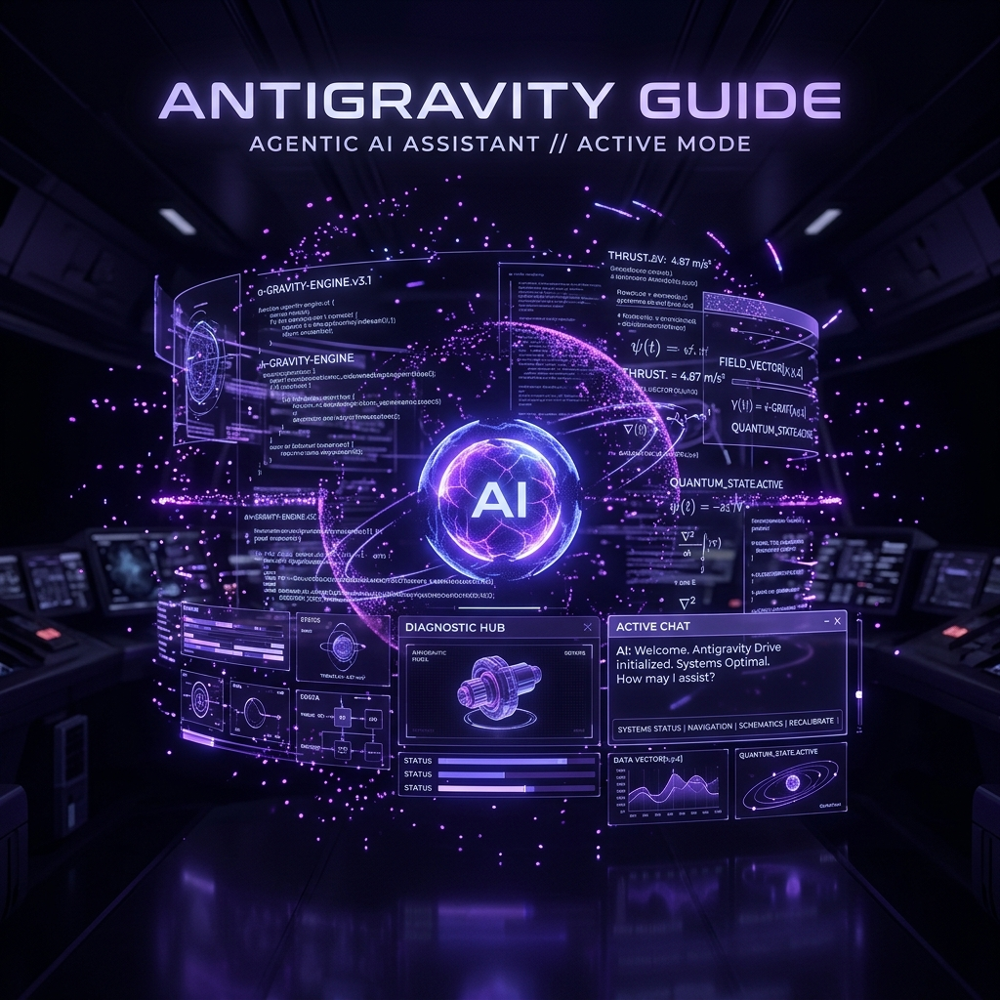

数あるAIツールの中でも、プログラミングや複雑なタスクの自動化に特化した「エージェント型AI」が注目を集めています。その代表格とも言えるのが、Google DeepMindの技術をベースに開発された強力なAIコーディングアシスタント「Antigravity」です。今回は、単なるチャットAIを超えた、その圧倒的な実力を紹介します。
1. Antigravity（アンチグラビティ）とは？
Antigravityは、エンジニアやクリエイターが「思考のスピードで開発を行う」ことを可能にする次世代のAIアシスタントです。単にコードを書くだけでなく、実際のファイル操作、ブラウザを使った検証、ターミナルでのコマンド実行などを、あなたの代わりに自律的に行うことができます。
Antigravityの3大特徴
エージェント機能
目的を伝えるだけで、ファイル作成からテスト、バグ修正まで自動完結。
ブラウザ連携
作成したサイトが正しく見えるか、AIが実際にブラウザを開いて確認。
深いコンテキスト理解
プロジェクト全体のコードを読み解き、最適な提案を行います。
2. どんな時におすすめ？
Antigravityは、特に以下のような場面で真価を発揮します：
- 「こんなアプリを作りたい」という構想はあるが、具体的な書き方がわからない時。
- 既存のサイトに新しい機能（お問い合わせフォームなど）をサクッと追加したい時。
- デザインの微調整やレスポンス対応など、手間のかかる作業を自動化したい時。
3. 初心者が使いこなすためのヒント
Antigravityは非常に強力ですが、初心者の方でも「対話」を通じてステップバイステップで進めることができます。まずは「まずはディレクトリの中身を確認して」や「トップページをカッコよくして」といった、自然な日本語での指示から始めてみましょう。
💡 Antigravityへの指示例：
「このプロジェクトを分析して、デザインをモダンなダークモードにして。特にボタンのホバーエフェクトは、滑らかなアニメーションを追加してほしい。」